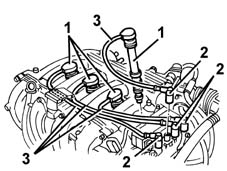
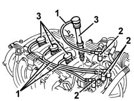

5510D14 spark plug cable lead bundle - r+r
- Path
- Procedures > 55 ELECTRICAL EQUIPMENT > 5510 ENGINE IGNITION > 5510D spark plugs and lead > 5510D14 spark plug cable lead bundle - r+r
- Kind
- repair procedure (removal / refitting; the operation number is the code)
- Applies to
- engines: 1.6 16v; all production periods
- Interactive page
- https://sloeber94.github.io/elrnDB-fMltpl/en/#/2891889
Applies to: engines: 1.6 16v; all production periods
 Removing
Removing
 Refitting
RefittingOpen the bonnet lid.
1. Remove the dust covers.
2. Disconnect the electrical connections from the coil.
3. Recover the spark plug leads.

Applies to: engines: 1.6 16v; all production periods
Refitting
RemovingCheck that the spark plug leads are not damaged.
1. Place the spark plug leads in position according to the diagram illustrated.
2. Connect the electrical connections to the coil.
3. Fit the dust covers in place on the spark plugs.

Topics that link to this page (7)
- B11 ENGINE STARTS WITH DIFFICULTY' / WHEN WARM
- B12 ENGINE STARTS WITH DIFFICULTY' / WHEN COLD
- B20 ENGINE STARTS, AND CUTS OUT STRAIGHT AWAY
- D01 ENGINE NOT RUNNING SMOOTHLY / (HESISTANT)
- D02 ENGINE NOT RUNNING SMOOTHLY / (LOSING POWER)
- D05 ENGINE DOES NOT PRODUCE BEST PERFORMANCE
- D10 ENGINE IDLE IRREGULAR